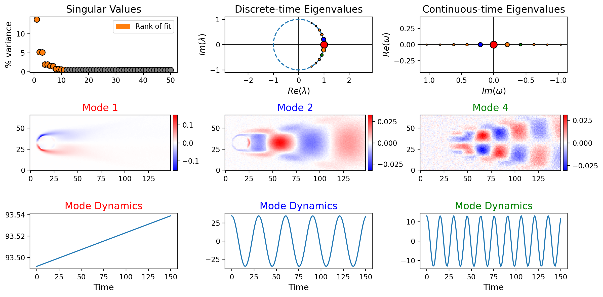
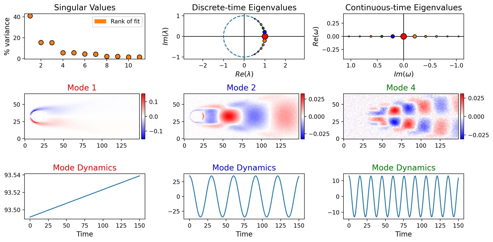
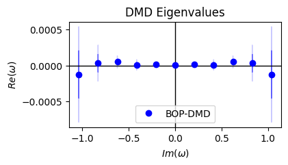
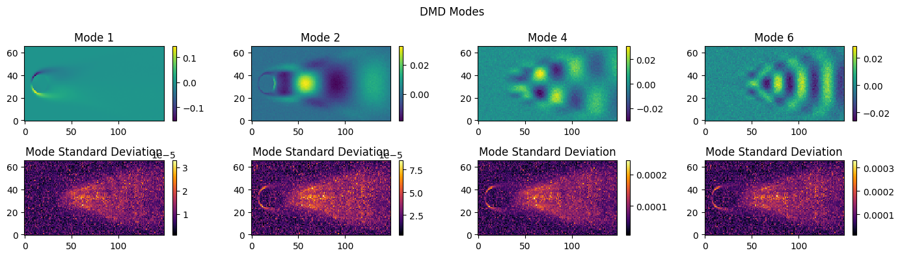
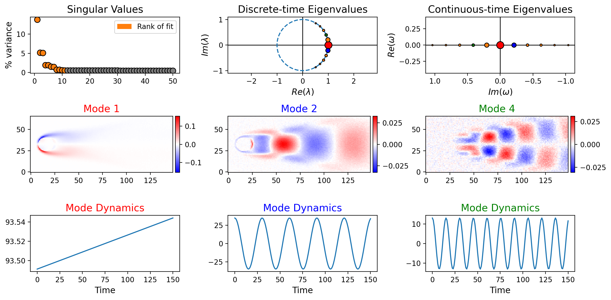
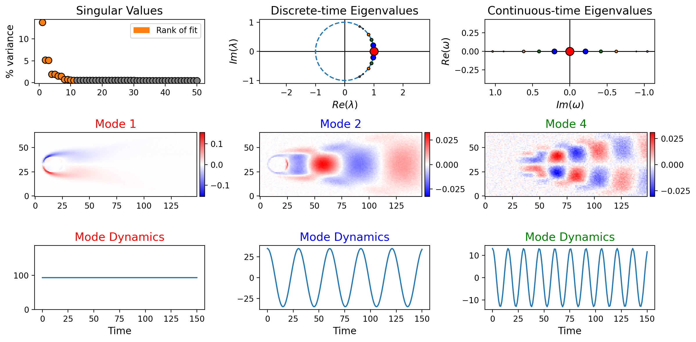
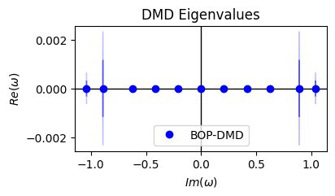
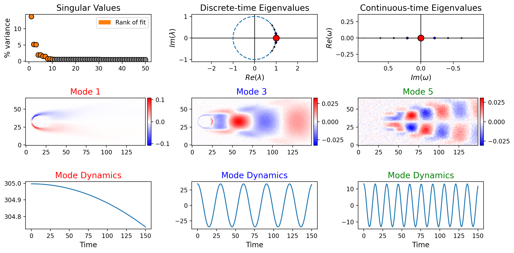

PyDMD#
User Manual 1: BOP-DMD on Flow Past a Cylinder Data#
In this guide, we briefly highlight all of the major features of the BOPDMD[docs][source] module by applying it to 2-D flow past a cylinder vorticity data with Reynolds number \(Re = 100\). Examples listed in the table of contents will consecutively build on one another so that sample models will slowly increase in complexity. Data is available at dmdbook.com/DATA.zip.
Note that we use a low resolution version of the data in this guide.
Table of Contents:#
Optimized DMD
Optimized DMD with Bagging (BOP-DMD)
Parallelized Bagging
BOP-DMD with Eigenvalue Constraints
Using Verbose Outputs
Removing Bad Bags
Applying Data Preprocessors
Import the Latest Version of PyDMD#
To ensure that you are working with the most up-to-date version of PyDMD, clone the repository with
git clone https://github.com/PyDMD/PyDMD
and pip install the package in development mode from the cloned directory.
pip install -e .
We may then perform our imports and be certain to have access to the latest PyDMD features.
[1]:
import dask
import warnings
import numpy as np
import scipy.io as sio
import matplotlib.pyplot as plt
from pydmd import BOPDMD
from pydmd.plotter import plot_summary
from pydmd.preprocessing import zero_mean_preprocessing
warnings.filterwarnings("ignore")
Import the Flow Past a Cylinder Data#
We have 151 snapshots, each with a pixel dimension of 149 x 66. To perform BOP-DMD, we define:
X= (9834, 151) NumPy array of flattened snapshots. We add Gaussian noise for added realism.t= (151,) NumPy array of times of snapshot collection. We assume these times to be \(0,1,\dots\)
[2]:
# Import vorticity data and frame dimensions.
mat = sio.loadmat("CYLINDER_ALL_LOW_RES.mat")
X = mat["VORTALL"] # Vorticity data.
nx = mat["nx"][0][0] # Number of pixels along x-axis.
ny = mat["ny"][0][0] # Number of pixels along y-axis.
m = X.shape[-1] # Number of time points.
t = np.arange(m) # Time data.
# Add Gaussian noise to the data.
noise_magnitude = 0.4
rng = np.random.default_rng(seed=1234)
noise = noise_magnitude * rng.standard_normal(X.shape)
X += noise
print(f"Data dimensions = {X.shape} (space, time)")
Data dimensions = (9834, 151) (space, time)
1. Optimized DMD#
To perform Optimized DMD, use the BOPDMD module with num_trials=0.
Adjust the
svd_rankparameter to control the number of spatiotemporal modes computed.Fit the model with the
fitfunction.For the
BOPDMDmodule, this function requires both the snapshotsXand the timest.
Plot results using the
plot_summaryfunction.See plotting tool documentation [docs] for more information on customization options.
[3]:
# Build an Optimized DMD model with 11 spatiotemporal modes.
bopdmd = BOPDMD(svd_rank=11, num_trials=0)
# Fit the Optimized DMD model.
bopdmd.fit(X, t)
# Plot a summary of the key spatiotemporal modes.
plot_summary(
bopdmd,
figsize=(12, 6), # Figure size.
index_modes=(0, 1, 3), # Indices of the modes to plot.
snapshots_shape=(ny, nx), # Shape of the modes.
order="F", # Order to use when reshaping the modes.
flip_continuous_axes=True, # Rotate the continuous-time eig plot.
)

Alternatively, pre-compute the SVD and use the fit_econ function. fit_econ is useful when the SVD is already computed and the snapshots matrix X is not available or is too large to store in memory.
[4]:
# Pre-compute the SVD. For a large matrix X, you could do this with a randomized SVD.
U, s, V = np.linalg.svd(X, full_matrices=False)
U = U[:, :11]
s = s[:11]
V = V[:11, :]
bopdmd_econ = BOPDMD(svd_rank=11, num_trials=0, use_proj=True, proj_basis=U)
bopdmd_econ.fit_econ(s, V, t)
plot_summary(
bopdmd_econ,
figsize=(12, 6), # Figure size.
index_modes=(0, 1, 3), # Indices of the modes to plot.
snapshots_shape=(ny, nx), # Shape of the modes.
order="F", # Order to use when reshaping the modes.
flip_continuous_axes=True, # Rotate the continuous-time eig plot.
)

[5]:
# Set the plot_summary arguments for later function calls.
plot_summary_kwargs = {}
plot_summary_kwargs["figsize"] = (12, 6)
plot_summary_kwargs["index_modes"] = (0, 1, 3)
plot_summary_kwargs["snapshots_shape"] = (ny, nx)
plot_summary_kwargs["order"] = "F"
plot_summary_kwargs["flip_continuous_axes"] = True
2. Optimized DMD with Bagging (BOP-DMD)#
To perform BOP-DMD, use the BOPDMD module with num_trials=k for positive integer k.
Set the
trial_sizeparameter to control the amount of data to use per bag.plot_summarynow displays the average spatiotemporal modes across trials.When multiple trials are performed, UQ metrics can also be plotted:
Use
plot_eig_uqfor eigenvalue UQ metrics.Use
plot_mode_uqfor mode UQ metrics.
[6]:
# Build a BOP-DMD model with 11 spatiotemporal modes, and 100 bagging trials,
# where each trial uses 80% of the total number of snapshots per trial.
# Set the seed for reproducible output.
bopdmd = BOPDMD(svd_rank=11, num_trials=100, trial_size=0.8, seed=1234)
bopdmd.fit(X, t)
plot_summary(bopdmd, **plot_summary_kwargs)
# Plot eigenvalue UQ metrics.
bopdmd.plot_eig_uq(figsize=(4, 2), flip_axes=True, draw_axes=True)
# Plot mode UQ metrics.
bopdmd.plot_mode_uq(
figsize=(14, 4),
plot_modes=(0, 1, 3, 5),
modes_shape=(ny, nx),
order="F",
)



3. Parallelized bagging#
If you are working on a large dataset or using a large number of bags, you might want to run the bagging in parallel. Bagging is an embarrassingly parallel problem run in a loop where each loop iteration is independent from other iterations. The parallelization is here implemented with Dask. To overcome Python’s GIL, it is recommended to use Dask’s multiprocessing or distributed schedulers. The example
below shows how to call the fit() method using the multiprocessing scheduler. For this to work, you need to set the parallel_bagging flag to True when creating the BOPDMD instance.
[7]:
# Build a BOP-DMD model with 11 spatiotemporal modes, and 100 bagging trials,
# where each trial uses 80% of the total number of snapshots per trial.
# Request parallel bagging, and set the seed for reproducible output.
bopdmd = BOPDMD(
svd_rank=11,
num_trials=100,
trial_size=0.8,
parallel_bagging=True,
seed=1234,
)
# Use the multi-processing scheduler
with dask.config.set(scheduler="processes"):
bopdmd.fit(X, t)
plot_summary(bopdmd, **plot_summary_kwargs)
# Plot eigenvalue UQ metrics.
bopdmd.plot_eig_uq(figsize=(4, 2), flip_axes=True, draw_axes=True)
# Plot mode UQ metrics.
bopdmd.plot_mode_uq(
figsize=(14, 4),
plot_modes=(0, 1, 3, 5),
modes_shape=(ny, nx),
order="F",
)
Number of converged bags: 0 out of 100. Consider loosening the tol requirements of the variable projection routine.



In the example above the parallelization hasn’t speeded up things. That’s because we are dealing with a relatively small dataset and only requesting 100 bags, so the overhead of spinning up and communicating information between multiple processes doesn’t really pay off. The example below shows improved performance when requesting 1000 bags.
[8]:
%%time
bopdmd = BOPDMD(svd_rank=11, num_trials=1000, trial_size=0.8)
bopdmd.fit(X, t)
CPU times: user 22.5 s, sys: 1.87 s, total: 24.4 s
Wall time: 23.7 s
[8]:
<pydmd.bopdmd.BOPDMD at 0x1255b2530>
[9]:
%%time
bopdmd = BOPDMD(
svd_rank=11, num_trials=1000, trial_size=0.8, parallel_bagging=True
)
with dask.config.set(scheduler="processes"):
bopdmd.fit(X, t)
Number of converged bags: 0 out of 1000. Consider loosening the tol requirements of the variable projection routine.
CPU times: user 3.98 s, sys: 3.46 s, total: 7.44 s
Wall time: 8.5 s
4. BOP-DMD with Eigenvalue Constraints#
Set the eig_constraints parameter to constrain the eigenvalue structure.
Can be a set of preset constraints, which may be combined:
"stable"= constrain eigenvalues to the left half of the complex plane."imag"= constrain eigenvalues to the imaginary axis of the complex plane."conjugate_pairs"= eigenvalues must be present with their complex conjugate.
Can also be a custom function that will be applied to the eigenvalues.
[10]:
bopdmd = BOPDMD(
svd_rank=11,
num_trials=100,
trial_size=0.8,
# Constrain the eigenvalues to be imaginary
# AND to always come in complex conjugate pairs.
eig_constraints={"imag", "conjugate_pairs"},
)
bopdmd.fit(X, t)
plot_summary(bopdmd, **plot_summary_kwargs)
# View the eigenvalue UQ metrics for comparison.
bopdmd.plot_eig_uq(figsize=(4, 2), flip_axes=True, draw_axes=True)


5. Using Verbose Outputs#
Turn on verbosity with the varpro_opts_dict parameter.
Verbosity allows users to see the iterative progress of the variable projection routine.
Verbosity also allows users to see the convergence status of the first 5 bagging trials.
See the
BOPDMDOperatordocumentation [docs] for more information on all of the parameters that can be set with thevarpro_opts_dict.
[11]:
bopdmd = BOPDMD(
svd_rank=11,
num_trials=100,
trial_size=0.8,
eig_constraints={"imag", "conjugate_pairs"},
# Turn on verbosity.
varpro_opts_dict={"verbose": True},
)
bopdmd.fit(X, t)
alpha before step/n[ 0.+1.0679411j 0.+0.87423134j 0.+0.64408916j 0.+0.42196146j
0.+0.j 0.+0.20861039j -0.-1.0679411j -0.-0.87423134j
-0.-0.64408916j -0.-0.20861039j -0.-0.42196146j]
alpha after step
[ 0.+1.0592104j 0.+0.87496704j 0.+0.63268703j 0.+0.416074j
0.+0.j 0.+0.20782629j -0.-1.0592104j -0.-0.87496704j
-0.-0.63268703j -0.-0.20782629j -0.-0.416074j ]
Step 1 Error 0.09326927865062162 Lambda 0.3333333333333333
alpha before step/n[ 0.+1.0592104j 0.+0.87496704j 0.+0.63268703j 0.+0.416074j
0.+0.j 0.+0.20782629j -0.-1.0592104j -0.-0.87496704j
-0.-0.63268703j -0.-0.20782629j -0.-0.416074j ]
alpha after step
[ 0.+1.0480205j 0.+0.8765196j 0.+0.62469643j 0.+0.415669j
0.+0.j 0.+0.20782778j -0.-1.0480205j -0.-0.8765196j
-0.-0.62469643j -0.-0.20782778j -0.-0.415669j ]
Step 2 Error 0.0718542617936748 Lambda 0.1111111111111111
alpha before step/n[ 0.+1.0480205j 0.+0.8765196j 0.+0.62469643j 0.+0.415669j
0.+0.j 0.+0.20782778j -0.-1.0480205j -0.-0.8765196j
-0.-0.62469643j -0.-0.20782778j -0.-0.415669j ]
alpha after step
[ 0.+1.0401313j 0.+0.8801494j 0.+0.6235838j 0.+0.41567668j
0.+0.j 0.+0.20782617j -0.-1.0401313j -0.-0.8801494j
-0.-0.6235838j -0.-0.20782617j -0.-0.41567668j]
Step 3 Error 0.06886552309743983 Lambda 0.037037037037037035
alpha before step/n[ 0.+1.0401313j 0.+0.8801494j 0.+0.6235838j 0.+0.41567668j
0.+0.j 0.+0.20782617j -0.-1.0401313j -0.-0.8801494j
-0.-0.6235838j -0.-0.20782617j -0.-0.41567668j]
alpha after step
[ 0.+1.038977j 0.+0.8881761j 0.+0.62357384j 0.+0.4156766j
0.+0.j 0.+0.207826j -0.-1.038977j -0.-0.8881761j
-0.-0.62357384j -0.-0.207826j -0.-0.4156766j ]
Step 4 Error 0.06807487823705759 Lambda 0.012345679012345678
alpha before step/n[ 0.+1.038977j 0.+0.8881761j 0.+0.62357384j 0.+0.4156766j
0.+0.j 0.+0.207826j -0.-1.038977j -0.-0.8881761j
-0.-0.62357384j -0.-0.207826j -0.-0.4156766j ]
alpha after step
[ 0.+1.0390561j 0.+0.89258355j 0.+0.6235786j 0.+0.41567606j
0.+0.j 0.+0.20782596j -0.-1.0390561j -0.-0.89258355j
-0.-0.6235786j -0.-0.20782596j -0.-0.41567606j]
Step 5 Error 0.06807032156093219 Lambda 404.5432098765432
alpha before step/n[ 0.+1.0390561j 0.+0.89258355j 0.+0.6235786j 0.+0.41567606j
0.+0.j 0.+0.20782596j -0.-1.0390561j -0.-0.89258355j
-0.-0.6235786j -0.-0.20782596j -0.-0.41567606j]
alpha after step
[ 0.+1.0390403j 0.+0.8885356j 0.+0.62358004j 0.+0.41567695j
0.+0.j 0.+0.20782606j -0.-1.0390403j -0.-0.8885356j
-0.-0.62358004j -0.-0.20782606j -0.-0.41567695j]
Step 6 Error 0.06806195264846275 Lambda 594.3053884888873
alpha before step/n[ 0.+1.0390403j 0.+0.8885356j 0.+0.62358004j 0.+0.41567695j
0.+0.j 0.+0.20782606j -0.-1.0390403j -0.-0.8885356j
-0.-0.62358004j -0.-0.20782606j -0.-0.41567695j]
alpha after step
[ 0.+1.0390534j 0.+0.8912927j 0.+0.62357914j 0.+0.41567641j
0.+0.j 0.+0.20782597j -0.-1.0390534j -0.-0.8912927j
-0.-0.62357914j -0.-0.20782597j -0.-0.41567641j]
Step 7 Error 0.06803793613293596 Lambda 594.3236523146658
alpha before step/n[ 0.+1.0390534j 0.+0.8912927j 0.+0.62357914j 0.+0.41567641j
0.+0.j 0.+0.20782597j -0.-1.0390534j -0.-0.8912927j
-0.-0.62357914j -0.-0.20782597j -0.-0.41567641j]
alpha after step
[ 0.+1.0390539j 0.+0.89001286j 0.+0.62358j 0.+0.41567674j
0.+0.j 0.+0.207826j -0.-1.0390539j -0.-0.89001286j
-0.-0.62358j -0.-0.207826j -0.-0.41567674j]
Step 8 Error 0.06803282263866778 Lambda 601.3824014283861
alpha before step/n[ 0.+1.0390539j 0.+0.89001286j 0.+0.62358j 0.+0.41567674j
0.+0.j 0.+0.207826j -0.-1.0390539j -0.-0.89001286j
-0.-0.62358j -0.-0.207826j -0.-0.41567674j]
alpha after step
[ 0.+1.0390568j 0.+0.8905969j 0.+0.62357974j 0.+0.41567662j
0.+0.j 0.+0.20782599j -0.-1.0390568j -0.-0.8905969j
-0.-0.62357974j -0.-0.20782599j -0.-0.41567662j]
Step 9 Error 0.06803171564370382 Lambda 761.411692554989
alpha before step/n[ 0.+1.0390568j 0.+0.8905969j 0.+0.62357974j 0.+0.41567662j
0.+0.j 0.+0.20782599j -0.-1.0390568j -0.-0.8905969j
-0.-0.62357974j -0.-0.20782599j -0.-0.41567662j]
alpha after step
[ 0.+1.039056j 0.+0.89038885j 0.+0.6235799j 0.+0.41567674j
0.+0.j 0.+0.20782599j -0.-1.039056j -0.-0.89038885j
-0.-0.6235799j -0.-0.20782599j -0.-0.41567674j]
Step 10 Error 0.06803144093342779 Lambda 1246.2718771392492
alpha before step/n[ 0.+1.039056j 0.+0.89038885j 0.+0.6235799j 0.+0.41567674j
0.+0.j 0.+0.20782599j -0.-1.039056j -0.-0.89038885j
-0.-0.6235799j -0.-0.20782599j -0.-0.41567674j]
alpha after step
[ 0.+1.0390548j 0.+0.8904011j 0.+0.62357986j 0.+0.4156768j
0.+0.j 0.+0.20782596j -0.-1.0390548j -0.-0.8904011j
-0.-0.62357986j -0.-0.20782596j -0.-0.4156768j ]
Step 11 Error 0.06803143646116064 Lambda 2480.886852960531
alpha before step/n[ 0.+1.0390548j 0.+0.8904011j 0.+0.62357986j 0.+0.4156768j
0.+0.j 0.+0.20782596j -0.-1.0390548j -0.-0.8904011j
-0.-0.62357986j -0.-0.20782596j -0.-0.4156768j ]
alpha after step
[ 0.+1.0390543j 0.+0.89040303j 0.+0.62357986j 0.+0.41567686j
0.+0.j 0.+0.20782594j -0.-1.0390543j -0.-0.89040303j
-0.-0.62357986j -0.-0.20782594j -0.-0.41567686j]
Step 12 Error 0.06803143597936817 Lambda 4958.032735757057
alpha before step/n[ 0.+1.0390543j 0.+0.89040303j 0.+0.62357986j 0.+0.41567686j
0.+0.j 0.+0.20782594j -0.-1.0390543j -0.-0.89040303j
-0.-0.62357986j -0.-0.20782594j -0.-0.41567686j]
alpha after step
[ 0.+1.0390542j 0.+0.8904035j 0.+0.62357986j 0.+0.4156769j
0.+0.j 0.+0.20782594j -0.-1.0390542j -0.-0.8904035j
-0.-0.62357986j -0.-0.20782594j -0.-0.4156769j ]
Step 13 Error 0.0680314358714341 Lambda 9913.473901197305
alpha before step/n[ 0.+1.0390542j 0.+0.8904035j 0.+0.62357986j 0.+0.4156769j
0.+0.j 0.+0.20782594j -0.-1.0390542j -0.-0.8904035j
-0.-0.62357986j -0.-0.20782594j -0.-0.4156769j ]
alpha after step
[ 0.+1.0390542j 0.+0.8904036j 0.+0.62357986j 0.+0.4156769j
0.+0.j 0.+0.20782594j -0.-1.0390542j -0.-0.8904036j
-0.-0.62357986j -0.-0.20782594j -0.-0.4156769j ]
Step 14 Error 0.06803143584743132 Lambda 19825.129659040853
alpha before step/n[ 0.+1.0390542j 0.+0.8904036j 0.+0.62357986j 0.+0.4156769j
0.+0.j 0.+0.20782594j -0.-1.0390542j -0.-0.8904036j
-0.-0.62357986j -0.-0.20782594j -0.-0.4156769j ]
alpha after step
[ 0.+1.0390542j 0.+0.8904037j 0.+0.62357986j 0.+0.4156769j
0.+0.j 0.+0.20782594j -0.-1.0390542j -0.-0.8904037j
-0.-0.62357986j -0.-0.20782594j -0.-0.4156769j ]
Step 15 Error 0.06803143583552092 Lambda 39647.03686682531
alpha before step/n[ 0.+1.0390542j 0.+0.8904037j 0.+0.62357986j 0.+0.4156769j
0.+0.j 0.+0.20782594j -0.-1.0390542j -0.-0.8904037j
-0.-0.62357986j -0.-0.20782594j -0.-0.4156769j ]
Failed to find appropriate step length at iteration 16. Current error 0.06803143583552092. Consider increasing maxlam or lamup.
Displaying the results of the next 5 trials...
Using all bag trial results...
alpha before step/n[ 0.+1.0390542j 0.+0.8904037j 0.+0.62357986j 0.+0.4156769j
0.+0.j 0.+0.20782594j -0.-1.0390542j -0.-0.8904037j
-0.-0.62357986j -0.-0.20782594j -0.-0.4156769j ]
alpha after step
[ 0.+1.0380495j 0.+0.8915367j 0.+0.6236055j 0.+0.4156845j
0.+0.j 0.+0.2078133j -0.-1.0380495j -0.-0.8915367j
-0.-0.6236055j -0.-0.2078133j -0.-0.4156845j]
Step 1 Error 0.06626623737534777 Lambda 0.9564608219473553
alpha before step/n[ 0.+1.0380495j 0.+0.8915367j 0.+0.6236055j 0.+0.4156845j
0.+0.j 0.+0.2078133j -0.-1.0380495j -0.-0.8915367j
-0.-0.6236055j -0.-0.2078133j -0.-0.4156845j]
alpha after step
[ 0.+1.038014j 0.+0.8905472j 0.+0.6236048j 0.+0.4156845j
0.+0.j 0.+0.20781346j -0.-1.038014j -0.-0.8905472j
-0.-0.6236048j -0.-0.20781346j -0.-0.4156845j ]
Step 2 Error 0.06626272795171308 Lambda 489.7079408370459
alpha before step/n[ 0.+1.038014j 0.+0.8905472j 0.+0.6236048j 0.+0.4156845j
0.+0.j 0.+0.20781346j -0.-1.038014j -0.-0.8905472j
-0.-0.6236048j -0.-0.20781346j -0.-0.4156845j ]
alpha after step
[ 0.+1.03801j 0.+0.8910392j 0.+0.6236049j 0.+0.4156844j
0.+0.j 0.+0.20781343j -0.-1.03801j -0.-0.8910392j
-0.-0.6236049j -0.-0.20781343j -0.-0.4156844j ]
Step 3 Error 0.06626199835720217 Lambda 802.1256052090183
alpha before step/n[ 0.+1.03801j 0.+0.8910392j 0.+0.6236049j 0.+0.4156844j
0.+0.j 0.+0.20781343j -0.-1.03801j -0.-0.8910392j
-0.-0.6236049j -0.-0.20781343j -0.-0.4156844j ]
alpha after step
[ 0.+1.0380088j 0.+0.89088464j 0.+0.6236047j 0.+0.41568443j
0.+0.j 0.+0.20781346j -0.-1.0380088j -0.-0.89088464j
-0.-0.6236047j -0.-0.20781346j -0.-0.41568443j]
Step 4 Error 0.06626170396307209 Lambda 1450.9896208278365
alpha before step/n[ 0.+1.0380088j 0.+0.89088464j 0.+0.6236047j 0.+0.41568443j
0.+0.j 0.+0.20781346j -0.-1.0380088j -0.-0.89088464j
-0.-0.6236047j -0.-0.20781346j -0.-0.41568443j]
alpha after step
[ 0.+1.0380086j 0.+0.8908787j 0.+0.6236045j 0.+0.4156844j
0.+0.j 0.+0.2078135j -0.-1.0380086j -0.-0.8908787j
-0.-0.6236045j -0.-0.2078135j -0.-0.4156844j]
Step 5 Error 0.0662617020561412 Lambda 2899.31529070075
alpha before step/n[ 0.+1.0380086j 0.+0.8908787j 0.+0.6236045j 0.+0.4156844j
0.+0.j 0.+0.2078135j -0.-1.0380086j -0.-0.8908787j
-0.-0.6236045j -0.-0.2078135j -0.-0.4156844j]
alpha after step
[ 0.+1.0380085j 0.+0.8908775j 0.+0.6236043j 0.+0.4156844j
0.+0.j 0.+0.20781353j -0.-1.0380085j -0.-0.8908775j
-0.-0.6236043j -0.-0.20781353j -0.-0.4156844j ]
Step 6 Error 0.06626170172026927 Lambda 5797.227987664698
alpha before step/n[ 0.+1.0380085j 0.+0.8908775j 0.+0.6236043j 0.+0.4156844j
0.+0.j 0.+0.20781353j -0.-1.0380085j -0.-0.8908775j
-0.-0.6236043j -0.-0.20781353j -0.-0.4156844j ]
alpha after step
[ 0.+1.0380085j 0.+0.8908772j 0.+0.6236042j 0.+0.4156844j
0.+0.j 0.+0.20781356j -0.-1.0380085j -0.-0.8908772j
-0.-0.6236042j -0.-0.20781356j -0.-0.4156844j ]
Step 7 Error 0.06626170162825064 Lambda 11593.356590811618
alpha before step/n[ 0.+1.0380085j 0.+0.8908772j 0.+0.6236042j 0.+0.4156844j
0.+0.j 0.+0.20781356j -0.-1.0380085j -0.-0.8908772j
-0.-0.6236042j -0.-0.20781356j -0.-0.4156844j ]
alpha after step
[ 0.+1.0380085j 0.+0.8908771j 0.+0.6236041j 0.+0.4156844j
0.+0.j 0.+0.20781358j -0.-1.0380085j -0.-0.8908771j
-0.-0.6236041j -0.-0.20781358j -0.-0.4156844j ]
Step 8 Error 0.06626170160595285 Lambda 23185.950252647308
alpha before step/n[ 0.+1.0380085j 0.+0.8908771j 0.+0.6236041j 0.+0.4156844j
0.+0.j 0.+0.20781358j -0.-1.0380085j -0.-0.8908771j
-0.-0.6236041j -0.-0.20781358j -0.-0.4156844j ]
Failed to find appropriate step length at iteration 9. Current error 0.06626170160595285. Consider increasing maxlam or lamup.
alpha before step/n[ 0.+1.0390542j 0.+0.8904037j 0.+0.62357986j 0.+0.4156769j
0.+0.j 0.+0.20782594j -0.-1.0390542j -0.-0.8904037j
-0.-0.62357986j -0.-0.20782594j -0.-0.4156769j ]
alpha after step
[ 0.+1.0389814j 0.+0.8895219j 0.+0.6235424j 0.+0.41571018j
0.+0.j 0.+0.20782247j -0.-1.0389814j -0.-0.8895219j
-0.-0.6235424j -0.-0.20782247j -0.-0.41571018j]
Step 1 Error 0.06718504386715671 Lambda 512.0
alpha before step/n[ 0.+1.0389814j 0.+0.8895219j 0.+0.6235424j 0.+0.41571018j
0.+0.j 0.+0.20782247j -0.-1.0389814j -0.-0.8895219j
-0.-0.6235424j -0.-0.20782247j -0.-0.41571018j]
alpha after step
[ 0.+1.0389787j 0.+0.8899816j 0.+0.62354153j 0.+0.41571045j
0.+0.j 0.+0.20782255j -0.-1.0389787j -0.-0.8899816j
-0.-0.62354153j -0.-0.20782255j -0.-0.41571045j]
Step 2 Error 0.06718435049467045 Lambda 872.9422582586365
alpha before step/n[ 0.+1.0389787j 0.+0.8899816j 0.+0.62354153j 0.+0.41571045j
0.+0.j 0.+0.20782255j -0.-1.0389787j -0.-0.8899816j
-0.-0.62354153j -0.-0.20782255j -0.-0.41571045j]
alpha after step
[ 0.+1.0389777j 0.+0.88984644j 0.+0.6235414j 0.+0.41571045j
0.+0.j 0.+0.20782252j -0.-1.0389777j -0.-0.88984644j
-0.-0.6235414j -0.-0.20782252j -0.-0.41571045j]
Step 3 Error 0.06718412021684562 Lambda 1631.4781965080979
alpha before step/n[ 0.+1.0389777j 0.+0.88984644j 0.+0.6235414j 0.+0.41571045j
0.+0.j 0.+0.20782252j -0.-1.0389777j -0.-0.88984644j
-0.-0.6235414j -0.-0.20782252j -0.-0.41571045j]
alpha after step
[ 0.+1.0389777j 0.+0.8898393j 0.+0.6235414j 0.+0.41571042j
0.+0.j 0.+0.20782253j -0.-1.0389777j -0.-0.8898393j
-0.-0.6235414j -0.-0.20782253j -0.-0.41571042j]
Step 4 Error 0.0671841180593468 Lambda 3259.9098560280327
alpha before step/n[ 0.+1.0389777j 0.+0.8898393j 0.+0.6235414j 0.+0.41571042j
0.+0.j 0.+0.20782253j -0.-1.0389777j -0.-0.8898393j
-0.-0.6235414j -0.-0.20782253j -0.-0.41571042j]
alpha after step
[ 0.+1.0389779j 0.+0.88983816j 0.+0.62354136j 0.+0.41571042j
0.+0.j 0.+0.20782253j -0.-1.0389779j -0.-0.88983816j
-0.-0.62354136j -0.-0.20782253j -0.-0.41571042j]
Step 5 Error 0.06718411780139244 Lambda 6518.339443157718
alpha before step/n[ 0.+1.0389779j 0.+0.88983816j 0.+0.62354136j 0.+0.41571042j
0.+0.j 0.+0.20782253j -0.-1.0389779j -0.-0.88983816j
-0.-0.62354136j -0.-0.20782253j -0.-0.41571042j]
alpha after step
[ 0.+1.0389779j 0.+0.8898379j 0.+0.6235413j 0.+0.41571042j
0.+0.j 0.+0.20782253j -0.-1.0389779j -0.-0.8898379j
-0.-0.6235413j -0.-0.20782253j -0.-0.41571042j]
Step 6 Error 0.06718411774962733 Lambda 13035.381661323645
alpha before step/n[ 0.+1.0389779j 0.+0.8898379j 0.+0.6235413j 0.+0.41571042j
0.+0.j 0.+0.20782253j -0.-1.0389779j -0.-0.8898379j
-0.-0.6235413j -0.-0.20782253j -0.-0.41571042j]
alpha after step
[ 0.+1.0389779j 0.+0.88983786j 0.+0.6235413j 0.+0.41571042j
0.+0.j 0.+0.20782253j -0.-1.0389779j -0.-0.88983786j
-0.-0.6235413j -0.-0.20782253j -0.-0.41571042j]
Step 7 Error 0.0671841177375261 Lambda 26069.707845429428
alpha before step/n[ 0.+1.0389779j 0.+0.88983786j 0.+0.6235413j 0.+0.41571042j
0.+0.j 0.+0.20782253j -0.-1.0389779j -0.-0.88983786j
-0.-0.6235413j -0.-0.20782253j -0.-0.41571042j]
Failed to find appropriate step length at iteration 8. Current error 0.0671841177375261. Consider increasing maxlam or lamup.
alpha before step/n[ 0.+1.0390542j 0.+0.8904037j 0.+0.62357986j 0.+0.4156769j
0.+0.j 0.+0.20782594j -0.-1.0390542j -0.-0.8904037j
-0.-0.62357986j -0.-0.20782594j -0.-0.4156769j ]
alpha after step
[ 0.+1.0389552j 0.+0.8876188j 0.+0.6236025j 0.+0.41566613j
0.+0.j 0.+0.20781866j -0.-1.0389552j -0.-0.8876188j
-0.-0.6236025j -0.-0.20781866j -0.-0.41566613j]
Step 1 Error 0.06731020610951732 Lambda 512.0
alpha before step/n[ 0.+1.0389552j 0.+0.8876188j 0.+0.6236025j 0.+0.41566613j
0.+0.j 0.+0.20781866j -0.-1.0389552j -0.-0.8876188j
-0.-0.6236025j -0.-0.20781866j -0.-0.41566613j]
alpha after step
[ 0.+1.0389408j 0.+0.8891362j 0.+0.6236024j 0.+0.41566572j
0.+0.j 0.+0.20781863j -0.-1.0389408j -0.-0.8891362j
-0.-0.6236024j -0.-0.20781863j -0.-0.41566572j]
Step 2 Error 0.06730348850130499 Lambda 552.136144248315
alpha before step/n[ 0.+1.0389408j 0.+0.8891362j 0.+0.6236024j 0.+0.41566572j
0.+0.j 0.+0.20781863j -0.-1.0389408j -0.-0.8891362j
-0.-0.6236024j -0.-0.20781863j -0.-0.41566572j]
alpha after step
[ 0.+1.038943j 0.+0.8882843j 0.+0.6236029j 0.+0.41566598j
0.+0.j 0.+0.20781866j -0.-1.038943j -0.-0.8882843j
-0.-0.6236029j -0.-0.20781866j -0.-0.41566598j]
Step 3 Error 0.06730075808583695 Lambda 599.8275574119546
alpha before step/n[ 0.+1.038943j 0.+0.8882843j 0.+0.6236029j 0.+0.41566598j
0.+0.j 0.+0.20781866j -0.-1.038943j -0.-0.8882843j
-0.-0.6236029j -0.-0.20781866j -0.-0.41566598j]
alpha after step
[ 0.+1.0389416j 0.+0.8886781j 0.+0.62360275j 0.+0.4156659j
0.+0.j 0.+0.20781864j -0.-1.0389416j -0.-0.8886781j
-0.-0.62360275j -0.-0.20781864j -0.-0.4156659j ]
Step 4 Error 0.06729996846409397 Lambda 861.0205719567053
alpha before step/n[ 0.+1.0389416j 0.+0.8886781j 0.+0.62360275j 0.+0.4156659j
0.+0.j 0.+0.20781864j -0.-1.0389416j -0.-0.8886781j
-0.-0.62360275j -0.-0.20781864j -0.-0.4156659j ]
alpha after step
[ 0.+1.0389419j 0.+0.8885719j 0.+0.6236028j 0.+0.41566595j
0.+0.j 0.+0.20781864j -0.-1.0389419j -0.-0.8885719j
-0.-0.6236028j -0.-0.20781864j -0.-0.41566595j]
Step 5 Error 0.06729983233812453 Lambda 1570.1844964234028
alpha before step/n[ 0.+1.0389419j 0.+0.8885719j 0.+0.6236028j 0.+0.41566595j
0.+0.j 0.+0.20781864j -0.-1.0389419j -0.-0.8885719j
-0.-0.6236028j -0.-0.20781864j -0.-0.41566595j]
alpha after step
[ 0.+1.0389413j 0.+0.8885696j 0.+0.6236028j 0.+0.415666j
0.+0.j 0.+0.20781863j -0.-1.0389413j -0.-0.8885696j
-0.-0.6236028j -0.-0.20781863j -0.-0.415666j ]
Step 6 Error 0.06729983218140358 Lambda 3139.913788663017
alpha before step/n[ 0.+1.0389413j 0.+0.8885696j 0.+0.6236028j 0.+0.415666j
0.+0.j 0.+0.20781863j -0.-1.0389413j -0.-0.8885696j
-0.-0.6236028j -0.-0.20781863j -0.-0.415666j ]
alpha after step
[ 0.+1.038941j 0.+0.88856936j 0.+0.62360275j 0.+0.415666j
0.+0.j 0.+0.20781863j -0.-1.038941j -0.-0.88856936j
-0.-0.62360275j -0.-0.20781863j -0.-0.415666j ]
Step 7 Error 0.06729983216056656 Lambda 6279.63115597603
alpha before step/n[ 0.+1.038941j 0.+0.88856936j 0.+0.62360275j 0.+0.415666j
0.+0.j 0.+0.20781863j -0.-1.038941j -0.-0.88856936j
-0.-0.62360275j -0.-0.20781863j -0.-0.415666j ]
alpha after step
[ 0.+1.038941j 0.+0.8885693j 0.+0.62360275j 0.+0.415666j
0.+0.j 0.+0.20781864j -0.-1.038941j -0.-0.8885693j
-0.-0.62360275j -0.-0.20781864j -0.-0.415666j ]
Step 8 Error 0.06729983215813137 Lambda 12559.17819869793
alpha before step/n[ 0.+1.038941j 0.+0.8885693j 0.+0.62360275j 0.+0.415666j
0.+0.j 0.+0.20781864j -0.-1.038941j -0.-0.8885693j
-0.-0.62360275j -0.-0.20781864j -0.-0.415666j ]
Failed to find appropriate step length at iteration 9. Current error 0.06729983215813137. Consider increasing maxlam or lamup.
alpha before step/n[ 0.+1.0390542j 0.+0.8904037j 0.+0.62357986j 0.+0.4156769j
0.+0.j 0.+0.20782594j -0.-1.0390542j -0.-0.8904037j
-0.-0.62357986j -0.-0.20782594j -0.-0.4156769j ]
alpha after step
[ 0.+1.038829j 0.+0.8885659j 0.+0.62365276j 0.+0.4157243j
0.+0.j 0.+0.20781277j -0.-1.038829j -0.-0.8885659j
-0.-0.62365276j -0.-0.20781277j -0.-0.4157243j ]
Step 1 Error 0.06815182899807162 Lambda 512.0
alpha before step/n[ 0.+1.038829j 0.+0.8885659j 0.+0.62365276j 0.+0.4157243j
0.+0.j 0.+0.20781277j -0.-1.038829j -0.-0.8885659j
-0.-0.62365276j -0.-0.20781277j -0.-0.4157243j ]
alpha after step
[ 0.+1.0387893j 0.+0.88925725j 0.+0.6236541j 0.+0.4157248j
0.+0.j 0.+0.20781277j -0.-1.0387893j -0.-0.88925725j
-0.-0.6236541j -0.-0.20781277j -0.-0.4157248j ]
Step 2 Error 0.06815061585059243 Lambda 716.0096261564406
alpha before step/n[ 0.+1.0387893j 0.+0.88925725j 0.+0.6236541j 0.+0.4157248j
0.+0.j 0.+0.20781277j -0.-1.0387893j -0.-0.88925725j
-0.-0.6236541j -0.-0.20781277j -0.-0.4157248j ]
alpha after step
[ 0.+1.0387897j 0.+0.8890666j 0.+0.62365454j 0.+0.41572455j
0.+0.j 0.+0.2078128j -0.-1.0387897j -0.-0.8890666j
-0.-0.62365454j -0.-0.2078128j -0.-0.41572455j]
Step 3 Error 0.06815031553637912 Lambda 1228.6016002411393
alpha before step/n[ 0.+1.0387897j 0.+0.8890666j 0.+0.62365454j 0.+0.41572455j
0.+0.j 0.+0.2078128j -0.-1.0387897j -0.-0.8890666j
-0.-0.62365454j -0.-0.2078128j -0.-0.41572455j]
alpha after step
[ 0.+1.0387925j 0.+0.88905865j 0.+0.6236546j 0.+0.41572422j
0.+0.j 0.+0.20781285j -0.-1.0387925j -0.-0.88905865j
-0.-0.6236546j -0.-0.20781285j -0.-0.41572422j]
Step 4 Error 0.06815031207022132 Lambda 2450.4669326744183
alpha before step/n[ 0.+1.0387925j 0.+0.88905865j 0.+0.6236546j 0.+0.41572422j
0.+0.j 0.+0.20781285j -0.-1.0387925j -0.-0.88905865j
-0.-0.6236546j -0.-0.20781285j -0.-0.41572422j]
alpha after step
[ 0.+1.0387938j 0.+0.88905716j 0.+0.62365466j 0.+0.41572404j
0.+0.j 0.+0.20781285j -0.-1.0387938j -0.-0.88905716j
-0.-0.62365466j -0.-0.20781285j -0.-0.41572404j]
Step 5 Error 0.0681503113270338 Lambda 4896.891210262639
alpha before step/n[ 0.+1.0387938j 0.+0.88905716j 0.+0.62365466j 0.+0.41572404j
0.+0.j 0.+0.20781285j -0.-1.0387938j -0.-0.88905716j
-0.-0.62365466j -0.-0.20781285j -0.-0.41572404j]
alpha after step
[ 0.+1.0387942j 0.+0.8890568j 0.+0.62365466j 0.+0.41572398j
0.+0.j 0.+0.20781282j -0.-1.0387942j -0.-0.8890568j
-0.-0.62365466j -0.-0.20781282j -0.-0.41572398j]
Step 6 Error 0.06815031115024961 Lambda 9790.942734736354
alpha before step/n[ 0.+1.0387942j 0.+0.8890568j 0.+0.62365466j 0.+0.41572398j
0.+0.j 0.+0.20781282j -0.-1.0387942j -0.-0.8890568j
-0.-0.62365466j -0.-0.20781282j -0.-0.41572398j]
alpha after step
[ 0.+1.0387943j 0.+0.8890567j 0.+0.62365466j 0.+0.41572398j
0.+0.j 0.+0.20781279j -0.-1.0387943j -0.-0.8890567j
-0.-0.62365466j -0.-0.20781279j -0.-0.41572398j]
Step 7 Error 0.068150311092002 Lambda 19578.53147297164
alpha before step/n[ 0.+1.0387943j 0.+0.8890567j 0.+0.62365466j 0.+0.41572398j
0.+0.j 0.+0.20781279j -0.-1.0387943j -0.-0.8890567j
-0.-0.62365466j -0.-0.20781279j -0.-0.41572398j]
alpha after step
[ 0.+1.0387943j 0.+0.8890567j 0.+0.62365466j 0.+0.41572398j
0.+0.j 0.+0.20781277j -0.-1.0387943j -0.-0.8890567j
-0.-0.62365466j -0.-0.20781277j -0.-0.41572398j]
Step 8 Error 0.06815031109040272 Lambda 39156.69431330874
alpha before step/n[ 0.+1.0387943j 0.+0.8890567j 0.+0.62365466j 0.+0.41572398j
0.+0.j 0.+0.20781277j -0.-1.0387943j -0.-0.8890567j
-0.-0.62365466j -0.-0.20781277j -0.-0.41572398j]
Failed to find appropriate step length at iteration 9. Current error 0.06815031109040272. Consider increasing maxlam or lamup.
alpha before step/n[ 0.+1.0390542j 0.+0.8904037j 0.+0.62357986j 0.+0.4156769j
0.+0.j 0.+0.20782594j -0.-1.0390542j -0.-0.8904037j
-0.-0.62357986j -0.-0.20782594j -0.-0.4156769j ]
alpha after step
[ 0.+1.0392678j 0.+0.888843j 0.+0.62359875j 0.+0.41566432j
0.+0.j 0.+0.20782426j -0.-1.0392678j -0.-0.888843j
-0.-0.62359875j -0.-0.20782426j -0.-0.41566432j]
Step 1 Error 0.06716710695515017 Lambda 256.0
alpha before step/n[ 0.+1.0392678j 0.+0.888843j 0.+0.62359875j 0.+0.41566432j
0.+0.j 0.+0.20782426j -0.-1.0392678j -0.-0.888843j
-0.-0.62359875j -0.-0.20782426j -0.-0.41566432j]
alpha after step
[ 0.+1.0392838j 0.+0.8900571j 0.+0.6235979j 0.+0.41566414j
0.+0.j 0.+0.20782413j -0.-1.0392838j -0.-0.8900571j
-0.-0.6235979j -0.-0.20782413j -0.-0.41566414j]
Step 2 Error 0.06716200237757404 Lambda 512.0
alpha before step/n[ 0.+1.0392838j 0.+0.8900571j 0.+0.6235979j 0.+0.41566414j
0.+0.j 0.+0.20782413j -0.-1.0392838j -0.-0.8900571j
-0.-0.6235979j -0.-0.20782413j -0.-0.41566414j]
alpha after step
[ 0.+1.0392817j 0.+0.8894858j 0.+0.6235986j 0.+0.4156643j
0.+0.j 0.+0.20782416j -0.-1.0392817j -0.-0.8894858j
-0.-0.6235986j -0.-0.20782416j -0.-0.4156643j ]
Step 3 Error 0.06716085062208554 Lambda 892.227244706684
alpha before step/n[ 0.+1.0392817j 0.+0.8894858j 0.+0.6235986j 0.+0.4156643j
0.+0.j 0.+0.20782416j -0.-1.0392817j -0.-0.8894858j
-0.-0.6235986j -0.-0.20782416j -0.-0.4156643j ]
alpha after step
[ 0.+1.0392761j 0.+0.8896297j 0.+0.62359816j 0.+0.41566437j
0.+0.j 0.+0.20782411j -0.-1.0392761j -0.-0.8896297j
-0.-0.62359816j -0.-0.20782411j -0.-0.41566437j]
Step 4 Error 0.06716054143934971 Lambda 1669.0050490874326
alpha before step/n[ 0.+1.0392761j 0.+0.8896297j 0.+0.62359816j 0.+0.41566437j
0.+0.j 0.+0.20782411j -0.-1.0392761j -0.-0.8896297j
-0.-0.62359816j -0.-0.20782411j -0.-0.41566437j]
alpha after step
[ 0.+1.0392721j 0.+0.8896405j 0.+0.62359804j 0.+0.4156645j
0.+0.j 0.+0.20782408j -0.-1.0392721j -0.-0.8896405j
-0.-0.62359804j -0.-0.20782408j -0.-0.4156645j ]
Step 5 Error 0.0671605320495256 Lambda 3323.020454792861
alpha before step/n[ 0.+1.0392721j 0.+0.8896405j 0.+0.62359804j 0.+0.4156645j
0.+0.j 0.+0.20782408j -0.-1.0392721j -0.-0.8896405j
-0.-0.62359804j -0.-0.20782408j -0.-0.4156645j ]
alpha after step
[ 0.+1.0392706j 0.+0.8896426j 0.+0.623598j 0.+0.41566455j
0.+0.j 0.+0.20782408j -0.-1.0392706j -0.-0.8896426j
-0.-0.623598j -0.-0.20782408j -0.-0.41566455j]
Step 6 Error 0.06716053030077274 Lambda 6634.004979170952
alpha before step/n[ 0.+1.0392706j 0.+0.8896426j 0.+0.623598j 0.+0.41566455j
0.+0.j 0.+0.20782408j -0.-1.0392706j -0.-0.8896426j
-0.-0.623598j -0.-0.20782408j -0.-0.41566455j]
alpha after step
[ 0.+1.0392702j 0.+0.8896431j 0.+0.623598j 0.+0.41566455j
0.+0.j 0.+0.20782408j -0.-1.0392702j -0.-0.8896431j
-0.-0.623598j -0.-0.20782408j -0.-0.41566455j]
Step 7 Error 0.06716052986632773 Lambda 13255.62277503739
alpha before step/n[ 0.+1.0392702j 0.+0.8896431j 0.+0.623598j 0.+0.41566455j
0.+0.j 0.+0.20782408j -0.-1.0392702j -0.-0.8896431j
-0.-0.623598j -0.-0.20782408j -0.-0.41566455j]
alpha after step
[ 0.+1.03927j 0.+0.8896432j 0.+0.623598j 0.+0.41566455j
0.+0.j 0.+0.20782408j -0.-1.03927j -0.-0.8896432j
-0.-0.623598j -0.-0.20782408j -0.-0.41566455j]
Step 8 Error 0.06716052976070822 Lambda 26499.02419144435
alpha before step/n[ 0.+1.03927j 0.+0.8896432j 0.+0.623598j 0.+0.41566455j
0.+0.j 0.+0.20782408j -0.-1.03927j -0.-0.8896432j
-0.-0.623598j -0.-0.20782408j -0.-0.41566455j]
alpha after step
[ 0.+1.03927j 0.+0.88964325j 0.+0.623598j 0.+0.41566455j
0.+0.j 0.+0.20782408j -0.-1.03927j -0.-0.88964325j
-0.-0.623598j -0.-0.20782408j -0.-0.41566455j]
Step 9 Error 0.06716052973399574 Lambda 52986.63140796675
alpha before step/n[ 0.+1.03927j 0.+0.88964325j 0.+0.623598j 0.+0.41566455j
0.+0.j 0.+0.20782408j -0.-1.03927j -0.-0.88964325j
-0.-0.623598j -0.-0.20782408j -0.-0.41566455j]
Failed to find appropriate step length at iteration 10. Current error 0.06716052973399574. Consider increasing maxlam or lamup.
[11]:
<pydmd.bopdmd.BOPDMD at 0x1372969e0>
6. Removing Bad Bags#
Omit the results of non-converged trials by setting remove_bad_bags=True (defaults to False).
Doing this activates the parameters
bag_warningandbag_maxfail:bag_warning= number of consecutive non-converged trials at which to warn the user. (default=100)bag_maxfail= number of consecutive non-converged trials to tolerate before quitting. (default=200)Use negative integer arguments for no warning or stopping condition.
Whether or not a trial converges depends on the tolerance parameter, which is controlled by
tol.Set this parameter with the
varpro_opts_dict.Use verbosity to gauge what a realistic tolerance might look like for your data.
The behavior of remove_bad_bags=True is different with sequential and parallel bagging. With parallel bagging (parallel_bagging=True, defaults to False), the algorithm will attempt a maximum of num_trials BOP-DMD trials, and will only use the converged trials to compute statistics. If the converged trials are fewer than 50% of num_trials, a warning is issued. The parameters bag_warning and bag_maxfail do not apply when parallel_bagging=True.
[12]:
bopdmd = BOPDMD(
svd_rank=11,
num_trials=100,
trial_size=0.8,
eig_constraints={"imag", "conjugate_pairs"},
# Adjust the tolerance so that convergence is more reasonable.
varpro_opts_dict={"verbose": True, "tol": 0.12},
# BOP-DMD will run until 100 trials converge,
# OR until 200 consecutive trials fail to converge.
remove_bad_bags=True,
)
bopdmd.fit(X, t)
alpha before step/n[ 0.+1.0679411j 0.+0.87423134j 0.+0.64408916j 0.+0.42196146j
0.+0.j 0.+0.20861039j -0.-1.0679411j -0.-0.87423134j
-0.-0.64408916j -0.-0.20861039j -0.-0.42196146j]
alpha after step
[ 0.+1.0592104j 0.+0.87496704j 0.+0.63268703j 0.+0.416074j
0.+0.j 0.+0.20782629j -0.-1.0592104j -0.-0.87496704j
-0.-0.63268703j -0.-0.20782629j -0.-0.416074j ]
Step 1 Error 0.09326927865062162 Lambda 0.3333333333333333
Convergence reached!
Displaying the results of the next 5 trials...
Non-converged trial results will be removed...
alpha before step/n[ 0.+1.0592104j 0.+0.87496704j 0.+0.63268703j 0.+0.416074j
0.+0.j 0.+0.20782629j -0.-1.0592104j -0.-0.87496704j
-0.-0.63268703j -0.-0.20782629j -0.-0.416074j ]
alpha after step
[ 0.+1.0485651j 0.+0.87839824j 0.+0.62471324j 0.+0.41565862j
0.+0.j 0.+0.20782273j -0.-1.0485651j -0.-0.87839824j
-0.-0.62471324j -0.-0.20782273j -0.-0.41565862j]
Step 1 Error 0.07091801498253276 Lambda 0.3333333333333333
Convergence reached!
alpha before step/n[ 0.+1.0592104j 0.+0.87496704j 0.+0.63268703j 0.+0.416074j
0.+0.j 0.+0.20782629j -0.-1.0592104j -0.-0.87496704j
-0.-0.63268703j -0.-0.20782629j -0.-0.416074j ]
alpha after step
[ 0.+1.0483886j 0.+0.8757358j 0.+0.6247924j 0.+0.41563964j
0.+0.j 0.+0.20784333j -0.-1.0483886j -0.-0.8757358j
-0.-0.6247924j -0.-0.20784333j -0.-0.41563964j]
Step 1 Error 0.07132623672957436 Lambda 0.3333333333333333
Convergence reached!
alpha before step/n[ 0.+1.0592104j 0.+0.87496704j 0.+0.63268703j 0.+0.416074j
0.+0.j 0.+0.20782629j -0.-1.0592104j -0.-0.87496704j
-0.-0.63268703j -0.-0.20782629j -0.-0.416074j ]
alpha after step
[ 0.+1.0478828j 0.+0.8755581j 0.+0.6247321j 0.+0.4156684j
0.+0.j 0.+0.20783709j -0.-1.0478828j -0.-0.8755581j
-0.-0.6247321j -0.-0.20783709j -0.-0.4156684j ]
Step 1 Error 0.07100439901522036 Lambda 0.3333333333333333
Convergence reached!
alpha before step/n[ 0.+1.0592104j 0.+0.87496704j 0.+0.63268703j 0.+0.416074j
0.+0.j 0.+0.20782629j -0.-1.0592104j -0.-0.87496704j
-0.-0.63268703j -0.-0.20782629j -0.-0.416074j ]
alpha after step
[ 0.+1.0482292j 0.+0.8751196j 0.+0.6246442j 0.+0.4156783j
0.+0.j 0.+0.20781703j -0.-1.0482292j -0.-0.8751196j
-0.-0.6246442j -0.-0.20781703j -0.-0.4156783j ]
Step 1 Error 0.07090608105777058 Lambda 0.3333333333333333
Convergence reached!
alpha before step/n[ 0.+1.0592104j 0.+0.87496704j 0.+0.63268703j 0.+0.416074j
0.+0.j 0.+0.20782629j -0.-1.0592104j -0.-0.87496704j
-0.-0.63268703j -0.-0.20782629j -0.-0.416074j ]
alpha after step
[ 0.+1.0480112j 0.+0.87477535j 0.+0.6246476j 0.+0.41567206j
0.+0.j 0.+0.20784183j -0.-1.0480112j -0.-0.87477535j
-0.-0.6246476j -0.-0.20784183j -0.-0.41567206j]
Step 1 Error 0.0718463158950538 Lambda 0.3333333333333333
Convergence reached!
[12]:
<pydmd.bopdmd.BOPDMD at 0x1375ee8c0>
7. Applying Data Preprocessors#
BOPDMD models can be used with tools from the pydmd.preprocessing suite.
Simply wrap your
BOPDMDmodel with the desired preprocessing tool.Calls to
fitwill now require setting the time vectortwith a keyword argument.
[13]:
# BOP-DMD with zero mean centered data.
bopdmd = BOPDMD(
svd_rank=10, # Use an even rank due to zero mean preprocessing.
num_trials=100,
trial_size=0.8,
eig_constraints={"imag", "conjugate_pairs"},
varpro_opts_dict={"verbose": True, "tol": 0.2},
remove_bad_bags=True,
)
bopdmd = zero_mean_preprocessing(bopdmd)
bopdmd.fit(X, t=t)
# Same plot_summary call, but plot modes 1, 3, and 5.
plot_summary_kwargs["index_modes"] = (0, 2, 4)
plot_summary(bopdmd, **plot_summary_kwargs)
alpha before step/n[-0.-8.7440389e-01j 0.+8.7440389e-01j -0.-6.4446163e-01j
0.+6.4446163e-01j -0.-4.2195317e-01j -0.-2.0858943e-01j
0.+4.2195317e-01j -0.-1.6914480e-16j 0.+1.6914480e-16j
0.+2.0858943e-01j]
alpha after step
[-0.-8.7534773e-01j 0.+8.7534773e-01j -0.-6.3309509e-01j
0.+6.3309509e-01j -0.-4.1607535e-01j -0.-2.0782600e-01j
0.+4.1607535e-01j 0.+2.4272466e-12j -0.-2.4272466e-12j
0.+2.0782600e-01j]
Step 1 Error 0.09295703340436305 Lambda 0.3333333333333333
Convergence reached!
Displaying the results of the next 5 trials...
Non-converged trial results will be removed...
alpha before step/n[-0.-8.7534773e-01j 0.+8.7534773e-01j -0.-6.3309509e-01j
0.+6.3309509e-01j -0.-4.1607535e-01j -0.-2.0782600e-01j
0.+4.1607535e-01j 0.+2.4272466e-12j -0.-2.4272466e-12j
0.+2.0782600e-01j]
alpha after step
[-0.-8.7791628e-01j 0.+8.7791628e-01j -0.-6.2504536e-01j
0.+6.2504536e-01j -0.-4.1562626e-01j -0.-2.0784374e-01j
0.+4.1562626e-01j 0.+2.3237892e-04j -0.-2.3237892e-04j
0.+2.0784374e-01j]
Step 1 Error 0.07571524444572719 Lambda 0.3333333333333333
Convergence reached!
alpha before step/n[-0.-8.7534773e-01j 0.+8.7534773e-01j -0.-6.3309509e-01j
0.+6.3309509e-01j -0.-4.1607535e-01j -0.-2.0782600e-01j
0.+4.1607535e-01j 0.+2.4272466e-12j -0.-2.4272466e-12j
0.+2.0782600e-01j]
alpha after step
[-0.-8.7864429e-01j 0.+8.7864429e-01j -0.-6.2492770e-01j
0.+6.2492770e-01j -0.-4.1569859e-01j -0.-2.0782846e-01j
0.+4.1569859e-01j -0.-7.7346619e-04j 0.+7.7346619e-04j
0.+2.0782846e-01j]
Step 1 Error 0.07566607319875757 Lambda 0.3333333333333333
Convergence reached!
alpha before step/n[-0.-8.7534773e-01j 0.+8.7534773e-01j -0.-6.3309509e-01j
0.+6.3309509e-01j -0.-4.1607535e-01j -0.-2.0782600e-01j
0.+4.1607535e-01j 0.+2.4272466e-12j -0.-2.4272466e-12j
0.+2.0782600e-01j]
alpha after step
[-0.-8.7856901e-01j 0.+8.7856901e-01j -0.-6.2489527e-01j
0.+6.2489527e-01j -0.-4.1566408e-01j -0.-2.0782317e-01j
0.+4.1566408e-01j 0.+5.5405661e-04j -0.-5.5405661e-04j
0.+2.0782317e-01j]
Step 1 Error 0.07514045457887134 Lambda 0.3333333333333333
Convergence reached!
alpha before step/n[-0.-8.7534773e-01j 0.+8.7534773e-01j -0.-6.3309509e-01j
0.+6.3309509e-01j -0.-4.1607535e-01j -0.-2.0782600e-01j
0.+4.1607535e-01j 0.+2.4272466e-12j -0.-2.4272466e-12j
0.+2.0782600e-01j]
alpha after step
[-0.-8.7746960e-01j 0.+8.7746960e-01j -0.-6.2487692e-01j
0.+6.2487692e-01j -0.-4.1566163e-01j -0.-2.0781405e-01j
0.+4.1566163e-01j -0.-4.8892129e-05j 0.+4.8892129e-05j
0.+2.0781405e-01j]
Step 1 Error 0.07553701249492724 Lambda 0.3333333333333333
Convergence reached!
alpha before step/n[-0.-8.7534773e-01j 0.+8.7534773e-01j -0.-6.3309509e-01j
0.+6.3309509e-01j -0.-4.1607535e-01j -0.-2.0782600e-01j
0.+4.1607535e-01j 0.+2.4272466e-12j -0.-2.4272466e-12j
0.+2.0782600e-01j]
alpha after step
[-0.-8.7707907e-01j 0.+8.7707907e-01j -0.-6.2483054e-01j
0.+6.2483054e-01j -0.-4.1567174e-01j -0.-2.0782293e-01j
0.+4.1567174e-01j -0.-4.5629786e-05j 0.+4.5629786e-05j
0.+2.0782293e-01j]
Step 1 Error 0.07566994220243274 Lambda 0.3333333333333333
Convergence reached!
